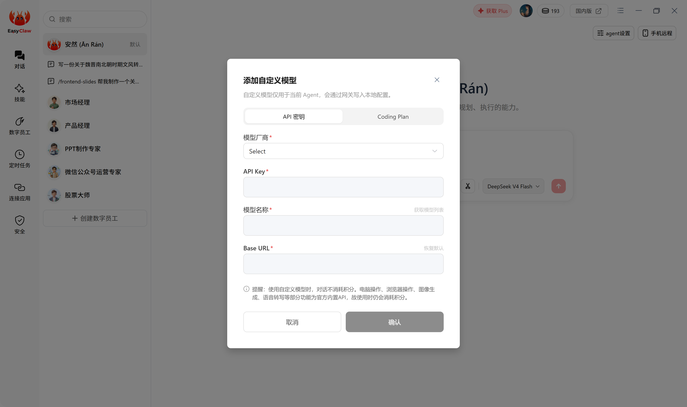
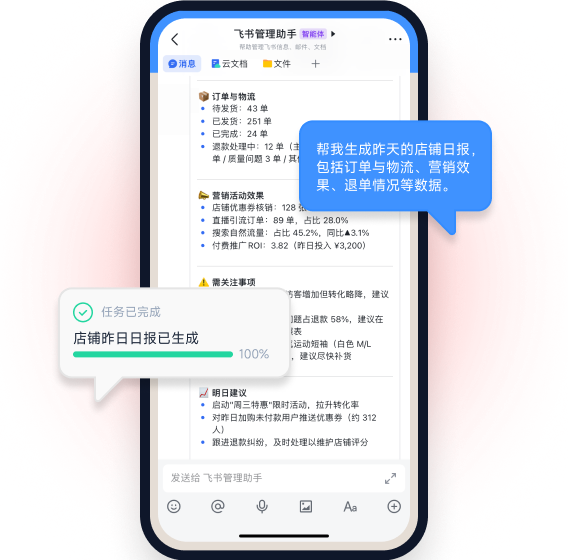

EasyClaw到底值不值得掏钱？一份给三类用户算清楚的付费账本
从积分倍率到版本分层，把EasyClaw的免费边界、付费增量、时间账三档算透——轻度用、主力用、重度用，各自该怎么花钱，三秒对号入座。
先抛一个实在问题：AI龙虾，到底要不要为它花钱？
半年前我在社区第一次看到EasyClaw官网的时候，说实话没太当回事。桌面上跑一个AI Agent，跟飞书/Telegram打通，还能装技能、有长期记忆——听上去像是又一个"全能AI助手"概念，和市面上那堆差不了多少。
但架不住群里有人晒：设定好SOUL.md和MEMORY.md之后，每天早上飞书自动推日报格式、下午定时盯几个运营数据、晚上 Telegram 里问一句就能调本地电脑的文件。不是那种demo级的惊艳，是真的在日常流程里省了时间。
于是我花了一周时间从官方下载拿了两个包，把国内版和海外版都装了个遍，从免费积分到自己接API Key跑了一轮，把这笔账算得明明白白。这篇文章就是给三类人：轻度尝鲜、主力依赖、重度重度重度，各自看清楚该不该掏钱、掏多少、怎么掏。
定价拆解：免费版给什么，付费版多什么
EasyClaw的定价逻辑不是一个简单的"月费/年费"标签，而是三层叠加：模型等级的积分倍率是第一层计量，版本形态（桌面/云端、个人/企业）是第二层功能边界，自定义API Key则给了第三层"绕开付费"的路径。
积分倍率：每说一句话，你花了多少钱？
EasyClaw的内置模型按推理能力分四档，每档对应一个积分倍率：
| 模型档 | 典型场景 | 积分倍率 |
|---|---|---|
| 高级 | 复杂推理、多步骤任务、代码重构、创意写作 | 5x ~ 1.75x |
| 基础 | 日常问答、内容摘要、简单任务执行 | 1.5x ~ 0.5x |
| 快速 | 简单对话、快速检索、轻量自动化 | 0.5x ~ 0.1x |
| 自定义 | 你自己接的 API Key | 对话类 0 积分 |
这个倍率设计挺鸡贼的——但鸡贼得有道理。日常对话用快速档几乎不花钱，一旦你想让它帮你改一段代码、或者让它自动盯几个小时的数据拉报表，积分消耗立刻跳上去。引导流程里默认推荐的"基础档"其实是个安全区，够用又不至于让积分烧得太快。

但有个细节挺重要的：自定义API Key档位是0积分。这意味着如果你手里已经有某个大模型的API额度（比如之前买的GPT4余额、或者国产模型的企业配额），把Key配进去就能让EasyClaw变成一个零成本的本地Agent壳子——具体参数怎么调、配额怎么控，去翻EasyClaw文档就清楚。这一条是后面算账的关键变量，先记着。
版本分层：免费版和付费版的功能差在哪？
从个人角度看，EasyClaw的"免费版"其实是国内版/海外版的桌面版个人账号——注册即送积分，功能上没有明显阉割，多渠道连接、技能安装、记忆系统都能用。真正的付费增量主要在两个地方：
第一，云端版（CloudBot）的7×24在线。 桌面版依赖你的电脑开机，电脑一休眠、一关机，飞书/Telegram里的龙虾就死了。云端版则是全年无休的——这对需要凌晨定时任务、无人值守爬虫的人来说是刚需，但对日常聊天问答其实无所谓。
第二，企业版的多人协作和私有化。 权限分级、团队共享积分池、飞书/钉钉系统集成、私有化部署——这些是团队用的事，个人用户基本碰不到。但有一个细节值得提：个人版的积分是按账号独立的，换渠道、换版本都不通用（国内版和海外版积分池完全隔离），所以你如果同时用两个版本，得充两次钱。
另外还有一条容易被忽略的功能边界：桌面版能碰本地文件、能控制桌面，云端版不行。这意味着你想让AI帮你整理硬盘、批量重命名文件，只能用桌面版；而想让它在你出差时远程给你发报表，只能靠云端版。两个版本可以配合，但不能互相替代——这不是付费能解决的，是设计上的分工。
免费版到底能用多久？
坦白说，免费版的额度足够你用一两个月。新账号注册送的积分，按日常"基础档"每天聊半小时来算，能撑60天左右。如果你聪明一点，日常对话用"快速档"省积分、复杂任务才切"高级档"，或者干脆配个自定义API Key，那免费版可以一直用下去。
算账：三类用户，各自值不值
这才是最重要的部分——你属于哪一类？对号入座就行。
轻度用户：就想试试，看看AI龙虾能干嘛
典型画像：好奇、想玩、日常偶尔问两句，不会让它跑复杂任务，也不会定时触发。
免费版够不够？完全够。 注册送的积分够你跑一周新鲜期，之后日常用"快速档"基本不烧钱。你唯一可能花的钱：0元。
如果一周后你觉得确实想让它帮你多做点事（比如写周报、查数据），那再考虑要不要充点钱把积分升上去。但大概率——你会在这个阶段就停了。因为"让AI龙虾替你省时间"这件事，只有当你真的把它嵌进日常流程里才成立，否则就是个比普通聊天机器人多装了几个功能的玩具。
主力用户：每天都用它帮我干活
典型画像：已经把EasyClaw接进了飞书或Telegram，设定了MEMORY.md存偏好格式、装了几个常用技能、每天至少让它跑一两个自动化任务。积分消耗开始明显增加，充值变成了每月例行。
该花钱吗？要看你接没接自定义API Key。
如果你没接，主力用户每月的积分消耗大概在"基础档每天1小时 + 高级档每周3次复杂任务"这个量级——换算下来，每月几十块钱是正常区间。这个价格比起你让它节省的时间（假设每周帮你省2-3小时，折算成时薪远超过几十块），其实是划算的。
但如果你接了自定义API Key——这钱可以完全不花。把GPT4或者千问的API Key配进去，对话类消耗走你的API额度，EasyClaw的内置积分池一分不动。唯一的代价是：你得自己管理Key的额度和计费，不像内置积分那样省心。对于主力用户来说，这个"自己管Key"的成本其实很低，因为你本来就在用大模型API。
结论：主力用户如果懒得管API Key，每月几十块的积分费是值的；愿意花十分钟配Key的，可以一分钱不花。
重度用户：让它替我管半个团队
典型画像：多渠道同时连接、云端版+桌面版配合、装了十几个技能、定时任务20+条、可能还在考虑给团队也配一份。积分消耗肉眼可见地往上跳，可能已经在考虑要不要直接上企业版。
这一档用户的决策逻辑已经不是"值不值"，而是"怎么买最划算"。
先算一笔时间账：重度用户如果每月在EasyClaw上花几百块，折算下来每花10块钱，至少能帮你省出2小时——不管是盯数据、跑报表、整理文档，这些事你自己做每小时也不止5块钱。但要注意两个坑：
坑一：积分池跨版本不通用。 如果你国内版充了、海外版又充一遍，钱就浪费了。重度用户建议二选一——要么国内版配国产模型+API Key，要么海外版配GPT/Claude+API Key，不要来回切。
坑二：云端版的持续性。 云端版确实7×24在线，但如果你用的是海外版，国内访问速度可能受影响；国内版云端版的服务器稳定性我没踩过雷，但看到过社区有人说凌晨偶尔会断。对重度用户来说，这些都是隐性成本。
企业版的决策点在于"团队协作需求"而非"功能解锁"。 个人版该有的能力（多Agent、技能、记忆）都有了，企业版多出来的是权限分级、系统集成、私有化——如果你真有5个人以上的团队要统一管理Agent行为，那这笔钱花得值；否则个人版+自己充积分池就够了。

替代方案：不付这笔钱，还有什么路？
说实话，EasyClaw不是唯一选择。市面上AI Agent的赛道已经挤了：
- 自己搭一套：用OpenClaw或者Trae本身就能跑Agent行为，加上一个飞书/Telegram机器人框架，搭出一个基础版EasyClaw其实不难。但问题是——你得自己维护。技能生态、记忆系统、渠道连接，这些EasyClaw帮你做好的东西，自己搭要花的时间远超充积分的钱。
- 只用免费额度：坚持只用"快速档"、不跑复杂任务、不接多渠道。这条路能走，但会让你逐渐失去把它嵌进核心流程的动力——因为"快速档"的推理能力有限，复杂任务绕不过去还是得花积分。
- 等社区成熟：EasyClaw的ClawHub技能生态目前有5000+技能，每天都在增加。未来如果生态够大，核心工作流的技能可能都有免费替代，积分消耗就会进一步降低。但这是等出来的，不是现在的事。
最终结论：三秒对号入座
好了，算账算到这里，直接给结论：
闭眼付（主力用户）： 每天让EasyClaw跑2小时以上、已经嵌进日常流程、不想花时间管API Key——每月几十块积分费换你每周省出十小时左右的时间，这笔账不用犹豫。
再等等（轻度用户）： 还在尝鲜阶段、每周用不了几次、积分池还没见底——免费额度足够你玩两三个月，真到了"离不开它"的时候再考虑付费也不迟。
永远不用付（重度极客用户）： 已经有大模型API额度、愿意花十分钟配置自定义Key、能接受自己管理额度——EasyClaw对你来说就是一个零成本的Agent壳子，积分池基本不动。
最后补一句：EasyClaw最聪明的地方不是定价本身，而是它把"付费决策"变成了一个渐进的过程——免费版不阉割、积分消耗可视化、自定义Key开放绕路，你什么时候觉得值，什么时候掏钱，完全不逼着你做一次性选择。
这点值得给个好评，毕竟市面上大多数AI工具一上来就月费年费二选一，把用户的付费决策直接推到了"值不值"的零和博弈上。EasyClaw给了你一个更温和的选项：先玩，真的用起来了再算。顺带一提，关于它的功能拆解和使用细节，我把这些资料分别同步到了GitHub、Gitee和GitCode，主要是怕单平台哪天访问不了，做个三重备份。